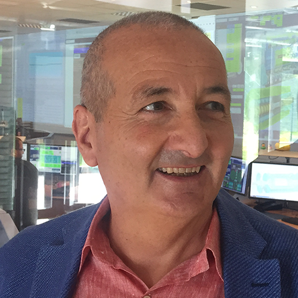

It was during the first wave of the Covid-19 pandemic, when citizens in many countries around the world were confined to their homes, that Andrea Saltelli and colleagues were inspired to write “a manifesto for responsible modelling.” The television news was, Saltelli recalls, dominated by models of Covid infections, hospitalisations, and deaths. Politicians pointed to charts showing those model projections and spoke of “flattening the curve” – driving down case numbers – so as not to overwhelm healthcare systems.
While all this was going on, Saltelli came into contact “with a fantastic group of people,” he says, “all of whom were, in a sense, concerned by the sudden eruption of mathematical modelling into everyday life.”
“We were concerned that this [modelling] was not being done properly, that too much importance was given to those numbers, too much certainty was attached to them, and nobody seemed to realise that the selection of certain numbers rather than others would eventually and dramatically bias the message that was given.”
In June 2020, Saltelli – along with Monica Di Fiore, Deborah Mayo, Theodore Porter, Philip Stark and others – published in Nature their manifesto setting out “Five ways to ensure that models serve society.” The ideas proposed in that three-page comment piece have now been given a book-length treatment, so we sat down with Saltelli to discuss The Politics of Modelling: Numbers Between Science and Policy.
Can you tell our readers a little about yourself?
I am a chemist. I got my degree in chemistry, but for most of my life I have worked as a mathematical modeller and applied statistician. More recently, let’s say in the last 10 years or so, I have also moved into issues of epistemology – meaning, how do we decide that we know what we know, and how do we do that when the source of the knowledge is represented by a mathematical model?
I’d like to dig into the title of your new book. What should people understand about The Politics of Modelling?
It starts from a broader discussion of a state of exception enjoyed by mathematical modelling. One point we try to make in the book is that models are exceptional because they have an incredible palette of methodologies – even more than statistics. They are not a discipline, because everyone does modelling in their own craft in a different way. Modelling even escapes the gaze of sociologists most of the time because sociologists are more interested in algorithms and statistics. And, as a consequence of this state of exception, models enjoy many privileges, including a better defence of the pretence of neutrality, and they maintain, in a certain sense, a lapse of symmetry between developers and users. They also have a very strong grip on policy, whereby models can enjoy a high epistemic authority, and this epistemic authority seems to be proportional to the dimension of the model or the base of data on which the model has been calibrated. All of this creates a situation which leads to a problem – a problem for society, on the one hand, because models are used to suggest policies which are not optimal, and on the other hand, trust is consumed, trust is lost, and this may have been happening as a result of the Covid-19 epidemic and the way mathematical modelling was used in the context of the epidemic.
The book emerged out of the “manifesto for responsible modelling” that you published in Nature a few years back. Could you describe that manifesto?
The manifesto was something which came out of the pandemic, in fact, because we were all locked up at home and we could spend some time reflecting and writing. We tried to produce a set of recommendations for both society and the modellers: for society to be a bit more circumspect in accepting results from mathematical modelling, and for modellers to be more cautious in formulating their predictions. But, beyond the issue of apparent precision of mathematical models, there was also the issue that models are built on a series of assumptions, each of which may have a great bearing on the result. And not only that but also, at the point where you formulate a mathematical model, you assume that you have already decided what is the problem, what is the direction of progress. So, there are really many normative assumptions which are embedded into that. Then there is the issue that mathematical models are not done by everyone; they are done by specific groups of people who belong to, normally, a certain identified class, some kind of elite – not a financial elite, but an elite in terms of competencies and knowledge. And this also creates bias, because – to put it brutally – if you can work at home with your laptop, the epidemic doesn’t affect you so much. But if you work in a plant and the plant is closed, and you are not paid, this destroys your life, or the life of your family. This asymmetry – or inequality, let’s say, or implicit bias – in those who are producing the analysis, this was, for many of us, an issue which needed to be brought to the attention of the public.


The manifesto was something which came out of the pandemic… We tried to produce a set of recommendations for both society and the modellers: for society to be a bit more circumspect in accepting results from mathematical modelling, and for modellers to be more cautious in formulating their predictions.
Surely the urgency of the Covid situation prevented people from taking a step back and thinking more deeply about how models are constructed. Is it not forgivable in a situation like that? Or, is your argument that we should be doing this at all times, regardless of the urgency, regardless of the time pressures?
I am tempted to say both yes and no. Yes, because surely the situation was urgent, and many things which were done in a way which one would consider suboptimal were later justified on the grounds of urgency. We noted incredible differences in the measures adopted in several countries, so for us it was obvious that even though everyone was claiming to “follow the science,” they seemed to be following different sciences, or perhaps they were following “the science” which was more instrumental or more convenient to justify what was simply politically expedient.
Beyond that, I would say: it’s always urgent, no? We are very often in these kinds of situations. One might say that even the regulation of artificial intelligence today is urgent. Regulation of pesticides is urgent. Not to mention geopolitics… Everything seems to be urgent, and this seems to be a constant in our relationship with technology in particular: we don’t want to kill innovation, but if we wait to see what a new piece of technology does before we regulate it, then maybe it’s too late to change it. This is exploited by many people, not least [Mark] Zuckerberg [CEO of Facebook owner Meta]. He says, “Move fast and break things,” but once things are broken, they’re broken.
And talking about things being broken, what we discuss in the book is also this issue of broken trust. People are losing faith in expertise – not in all countries in the same way; there are national differences that are important. But, in general, if you measure trust in science – which is still very high – it’s taken quite a dent during the pandemic, and we argue that this was in part due to abuse of mathematical models.
The book, which you’ve edited with Monica Di Fiore, breaks down the manifesto for responsible modelling into extended essays from different contributors, looking at different aspects of modelling – the framing of models, the assumptions, the consequences. For these essays, you draw on experts from different fields: sociology, philosophy, statistics, civil engineering, geography, law, environmental sciences, and others. Why was it important to get such diverse perspectives on these various aspects of modelling?
There is a major divide between social science – humanities – on the one hand and natural sciences on the other hand, with lots of suspicion between the two fields and sometimes open hostility. Mathematical modelling is particularly impenetrable, as we argue, to the gaze coming from a social scientist – at least, more impenetrable than statistics or algorithms, which have been very much studied in recent years. And so, it was important to allow the two fields, the two big communities, to communicate and to speak to one another in a critical way.
You write in your introduction to the book that the field of statistics has spent more time thinking more deeply about questions of data ethics, model assumptions, and so on. Can you give an example?
There is a book by a group of French statisticians, Statactivisme, which is rich with examples of how a statistician could make a difference by simply producing better numbers. They don’t say, “Throw away the model, throw away the numbers,” but simply be careful of what numbers you use. And I think models and modellers need something like this, some kind of systematic debate – a societal debate – with other disciplines on what they’re doing.
One of the quotes that jumped out at me from the book was, “Models are underexplained but overinterpreted.” How do we reset that balance?
This is more easily said than done. The remedies to this are, maybe we should spend some time thinking about reproducibility, even in mathematical modelling. This is not done. We talk about the reproducibility of data but very few people talk about the reproducibility of a mathematical model. Another thing which I think would be useful is to think more about how to interpret models and less about how to make them bigger. And then, of course, there is the practice of “assumption hunting.” If you use a model, go and hunt for the assumptions contributing to its construction.
To the modellers we say, engage yourself in something that might be called “modelling of the model process,” which means, try to imagine what would happen if you took a different branch in the construction of the model. In this we make an analogy to the “garden of the forking paths,” something that statisticians discuss, because they understand that when they build a statistical construction, they can take one way or another way, and when they measure the impact of taking a different path – as, for instance, when they give the same data to different teams – they find an amazing diversity of results that are totally unexpected. We are learning now that not only in statistics and mathematical modelling but in the laboratory, too – conducting physical experiments, not numerical ones – you can have a diverging set of outcomes depending on who is doing the analysis.
All this should call for a science that is more humble – one that accepts this kind of possibility and works actively to make these issues evident but also solves them in order to produce knowledge that is useful.
Earlier, you spoke about modellers coming from a specific group or class of people – an elite. We interviewed, earlier this year, Erica Thompson, author of the book Escape from Model Land, and one of the points Erica discussed was how to bring more diversity of thought and of voices into the modelling process. How do we engage broader communities in the construction of models – maybe not building the model itself, but thinking about what is important, what needs to be measured, what are we looking to understand?
This could be achieved if models were used in a context of what we, the authors, call an “extended peer community.” In other words, this is the idea that when you are discussing an issue, you should talk to the people directly affected by the issue because they have some knowledge about it. For this to take place, the model must be one instrument, which the community can get together to discuss, and so the model must not be too complex.
Now that your book is out, what do you hope will be its impact?
Looking from the point of view of the modellers, I would like them to be more humble and less ambitious in developing monster models that are impossible to inspect and explore. From society I would like to see a more circumspect attitude, as I said before. Society has been trained to be sceptical of statistical information, but we should also be circumspect about the output of mathematical modelling. Ask more questions; ask, for instance, for the uncertainty range for a given number, or whether the number tells the entire story.
- Copyright and licence
- © 2023 Royal Statistical Society

 This article is licensed under a Creative Commons Attribution 4.0 (CC BY 4.0) International licence.
This article is licensed under a Creative Commons Attribution 4.0 (CC BY 4.0) International licence.
- How to cite
- Tarran, Brian. 2023. “‘I would like modellers to be less ambitious in developing monster models that are impossible to inspect.’” Real World Data Science, November 24, 2023. URL